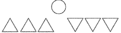

| |
| |
|


|
| Сознание синхронизировано с восприятием. Лишь язык запаздывает - в фазу. И
поэтому так легко подумать, что это они так воздействуют на окружающую "среду". |
| |
|
А. Здороваюсь. 2 раза. Идем немного по тротуару, к транспортной остановке.
Думаю о том, что складывающийся "текст действия" (copyright Iz, 2000)
гораздо более подошел бы в нашу рубрику "В
Среде". Но мы живем не в среде. Скорее, среди.
Так вот. Идем и говорим. Где-то на громкости чуть выше средней и почти о новостях.
Я их спрашиваю, а читали вы последние статьи Льва Пирогова?
|
| Курица - птица, крокодилы летают. О попсе, убойной силе любви и о том, что такое Дракон каратэ.} |
| | | Крутойвильнюсский панк Вайдас Юозас Мацконис рассказывал мне об игре, которая
называется "шудас": надо сесть в кружок вокруг совместно накаканной большой
кучки и по очереди хлопать по ней руками. Побеждает тот, кто сильнее забрызгался.
|
| Экс-лейтенант Дэн Тейлор (Портной) сидит на фальш-борте яхты "Дженни" и, по-янковски улыбаясьглазами, смотрит на Форреста Гампа.
|
| | | Абсолютное предопределение в протестантской транскрипции выглядит так: все уже умерли.Одни при этом заведомо попали в Ад (где сами знаете что), а другие - в Рай, где
Рыгаловка и Жратва. Правда, пока об этом никто не знает: чисто Спасен ты или
Проклят по жизни. Но! Можно узнать.
|
 |
 |
|
|